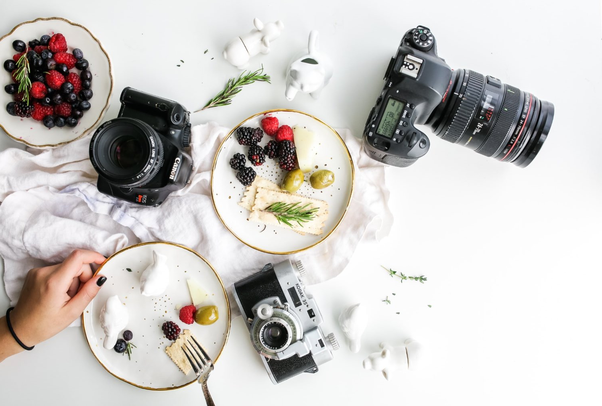

Food Photography Tips

Getting Started with Food Photography
Food photography is about capturing the essence of a dish to make it irresistible. Here are some essential tips to improve your skills:
- Natural Light: Use soft, natural light for a realistic and fresh look. Avoid harsh artificial lighting.
- Angles Matter: Experiment with different perspectives:
- Top-down: Best for flat lays like pizzas, salads, or platters.
- 45-degree angle: Ideal for most dishes to capture depth and texture.
- Eye-level: Perfect for layered dishes like burgers or desserts.
- Props and Styling: Use complementary props such as utensils, napkins, or textured tablecloths to create a story.
- Focus on Freshness: Capture dishes as soon as they’re ready to highlight their vibrant colors and textures.
- Editing: Use photo editing software to adjust brightness, contrast, and saturation for a polished look.
Advanced Tips for Professional Shots
- Tripod Use: Keeps your shots steady, especially in low-light conditions.
- Food Styling Tweaks: Spray fresh produce with water to make them look crisp. Use oil to enhance the shine of meats.
- Negative Space: Leave some empty space around the dish for a minimalist look or text overlay.